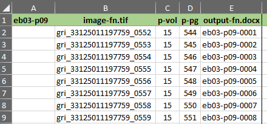

Inventory the Images
Finalize image selections and add filenames to the inventory
- Create a page-inventory spreadsheet for the new section. For instructions, follow steps 1-5 in Page-Inventory File.
- Enter the print page number for each image in the p-pg column by entering the starting page number and auto-populating the column. Look at the last image file. Does the page number match the auto-populated number? Generally the printed page number will be significantly less than the number in the p-pg column. This is because the image collection includes unnumbered pages for plates.
-
We do not scan unnumbered pages, so we need to find them, move them into the
plates subfolder, and correct the numbering the the
p-pg column. Start with the last file and make a note
of the difference by substracting the print page number from the auto-populated
number.
The number in the p-pg column is 233. The last image file shows a print page number of 225. The difference tells us there are exactly 8 image files for unnumbered pages in this section.
- To locate the unnumbered image files, start at the beginning and check every thirty pages or so to find where the print page number fails to correspond with the p-pg number. Then look in that group of thirty to locate the unnumbered pages. Plates are printed on one side of a page, with the verso blank, so unnumbered pages always come in pairs.
-
When you find a cluster of unnumbered pages, update the
p-pg column. Select everything in the column
beginning with the first out-of-sync number. Copy-and-paste it into the correct
position, leaving blank cells for the unnumbered page images.
Figure 1: Page-inventory spreadsheet columns 
- Insert the correct information into the blank cells. Use blank, plate, or chart, as necessary.
- When you have correctly inventoried all image files, save the page-inventory spreadsheet. Open the records/production.xslx spreadsheet. Enter the date in the inventory column.
- Close and save all files. Congratulations! You have successfully created a new collection of images for scanning.